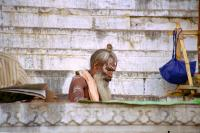

|
Lundi 2 avril
Ce n'est pas la premiere fois que l'on ressent cela: aujourd'hui encore, nous
sommes tirailles par deux envies contradictoires. D'une part on aimerait bien
s'arreter un peu plus longtemps ici a Puri. On s'y sent vraiment bien, on y
mange vraiment bien, l'ambiance est tres decontractee, la mer et la plage sont
agreables, els indiens ne sont poas aussi stresses et sressants que dans les
grandes villes, l'endroit ou on loge est reposant et les proprietaires si souriants...
Mais d'un autre cote, on ressent l'appel du large -je sais qu'on ne voyage pas
en bateau, c'est une image, une parabole, juste pour dire qu'on a envie de continuer
notre route pour decouvrir toutes ces choses qui nous attendent, a commencer
par Calcutta.
Nous voici donc dans le train pour Calcutta. C'est un moyen privilegie pour
discuter avec les indiens. En effet, leur curiosite naturelle est renforcee
par l'envie de tuer le temps lors de ces voyeges inteminables. Il n'en faut
pas plus pour entamer de grandes discussions. On a ainsi appris pas mal de choses
d'un jeune responsable marketing qui travaille dans une societe installee a
Calcutta. On vous livre ca brut, on n'a pas le temps ni les moyens de verifier.
Le salaire pour une personne "eduquee" travaillant dans une grande ville comme
Calcutta, est d'environ 12000 a 15000 roupies par mois (2000 a 2500 FF). Beaucoup
possedent leur propre maison, mais ceux qui doivent payer un loyer doiuvent
debourser environ 3000 roupies (500 FF). Les plus bas salaires, destines aux
personnes sans aucune qualification est de 80 roupies par jour (13 FF). L'ecole
est gratuite jusqu'a 10 ans. Apres, il faut payer. Mais dans les faits, beaucoup
ne vont pas du tout a l'ecole, car le pays est compose de villages tres petits
et eloignes les uns des autres. Alors impossible de construire une ecole dans
chacun d'eux. Sinon, en vrac, une voiture coute aux environ de 70000 FF, l'Inde
est autonaume en ce qui concerne le gaz, le charbon et l'alimentation, mais
pas pour le petrole. Et le litre d'essence vaut 30 roupies, soit pres de 5 FF.
Mardi 3 avril
C'est chouette de retrouver Calcutta. C'est la ville d'Inde que je préfère.
Elle est différente, par son architecture: de très beaux immeubles, on se croirait
parfois à Paris, par sa diversité : des grandes avenues aux étroites ruelles
des petits quartiers, ou aux "sentiers" des marchés "incrustés" entre les immeubles,
il n'y a souvent qu' un pas, idem des quartiers chics aux pauvres qui dorment
sur le trottoir, et surtout par son ambiance. Plus que toute autre, elle vit.
C'est sympa de retrouver des lieux et des têtes connues: Ali le tailleur qui
a juste un peu grossi mais dont l'échoppe n'a pas changé, le Sikkh toujours
fier sous son turban avec sa magnifique barbe derrière le comptoir de son resto
(au moins 15 personnes y travaillent pour une quinzaine de petites tables),
le sourd muet sous l'escalier de la Salvation Army vendant toujours ses bouquins,
le vieux serveur chez le Sikkh avec sa bonne tête, jusqu'au vieux rickshaw souriant
et aux pipos dans la rue. Bref, on dirait que rien n'a changé en 6 ans. Et pourtant
si, et le changement est radical et positif. Calcutta restait une "poubelle
vivante et souriante" dans ma tête. Elle est devenue une ville propre. Peut-être
même la plus propre par laquelle nous soyions passés. Et ça, c'est énorme. Finies
les ordures à tous les coins de rues, elles sont centralisées dans des endroits
précis (pas dans des sacs poubelles tout de même, faut pas pousser!) et ramassées!
Et la circulation m'a semblée plus fluide, beaucoup moins d'auto-rickshaw et
de rickshaws à bras. Le gouvernement est passé par là, pour virer la plupart
d'entre eux. Ce n'est pas forcément la meilleure des choses puisqu'ils font
partie des plus pauvres et qu'en leur interdisant ce travail, on ne fait que
cacher leur misère et leur rendre la vie plus dure encore.
Mercredi 4 avril
Ballade a pied jusqu'à Howrah Bridge via le marché aux fleurs (trop tard, à
midi tout est vendu, il ne reste que des feuilles partout, fallait se lever
plus tôt), des ruelles extraordinaires, larges d'un mètre cinquante, reliant
deux avenues et dans lesquelles s'alignent des dizaines de minuscules échoppes
affichant toutes sur leurs enseignes EXACTEMENT la même adresse, celle qui a
pignon sur l'une des avenues. Extraordinaire quartier au-dela de BBD Bagh, autour
du lieu où on réserve les billets de train (Fairly Place), véritable resto à
ciel ouvert, les gargottes s'alignent sur les trottoirs à la suite les unes
des autres. Ce sont des cabannes en bois, des charettes, des tables, des presse
cannes à sucre, des gaz ou chauffe le thé, des marmites... Tout est réuni là
et chacun propose des plats qui sentent bon. Il fait une chaleur terrible.
Jeudi 5 avril
A la recherche du centre de Don Bosco (qui aide les gosses de la rue à s'en
sortir en leur proposant un deal: ils quittent la rue pour le gite, le couvert,
l'école, l'apprentissage d'un métier mais ils ne doivent pas faire des allers
et venues rue-centre, ils doivent choisir), nous passons 4 heures dans les transports.
Vers la gare d'Howrah, au-delà, retour à la gare, vers l'Esplanade d'où l'on
est partis, vers ailleurs, bref, 5 ou 6 bus et quelques kilomètres à pied plus
tard, nous atteignons un endroit (Asha Niketan) qui n'est pas vraiment ce que
nous cherchions. Tant pis, on s'en contentera... Notre erreur: on a demandé
aux indiens et comme ils ont horreur de ne pas savoir, ils nous ont gentiment
aidés... Même et apparement surtout quand ils ne savaient pas.
Vendredi 6 avril
Achats fructueux au "fancy market" que l'on pourrait appeler "grey marcket",
autrement dit on y trouve tous les produits de contrebande comme les appareils
photos ou les objectifs à des prix intéressants (exemple, 1000 FF de gagnés
sur un objectif à 2400 FF). Mais sans garantie. Le marchandage est rude. Se
ballader au fancy market avait un petit côté dessin animé comique. Au fur et
à mesure que nous avancions dans les étroites allées de ce marché couvert, les
vendeurs se levaient, se mettaient dans l'allée, et nous invitaient à acheter,
tout du moins regarder "yes madam, have a look". Il y a une boutique tous les
deux mètres et ce n'est pas une image. On poursuivait, le vendeur s'effaçait,
le suivant se dressait, tels des automates.
17H00, on se met en route pour la gare. Et c'est le moment que choisit l'orage
(de pré-mousson, on a compris) pour éclater sur nos têtes. D'abord, le vent
soulève violemment la poussière pour nous l'envoyer dans la figure, puis la
pluie creuse des sillons dans la poussière qui nous colle à la peau et aux habits.
Chouette, le trajet jusqu'à Varanasi (ou Bénarès ou Barnabé pour Lionel) ne
dure que 15 heures… Ça va être sympa. L'averse se transforme en déluge, alors
on saute (lourdement avec nos lests de 15 kilos chacun) dans le premier bus
qui va à la gare. Il est déjà bondé et je ne sais pas comment on a réussi à
y monter! Dedans, un monsieur nous fait gentiment remarquer que nos bagages
sont très encombrants (j'ai déjà assommé 3 fois le type derrière moi avec mon
sac a dos) en pensant sans aucun doute que sinon on ne serait pas aussi serrés!!!
On est au moins 70 dans ce petit bus qui doit avoir une contenance de 30 ou
40, alors, c'est sûr, sans nos sacs, on serait à l'aise Blaise! Et le rabatteur
de bus qui n'arrête pas de crier pour trouver d'autres clients. Mais où on va
les mettre?
Suite du voyage : Varanasi
|
Inde
Calcutta
|

Inde
Varanasi
|
|
|